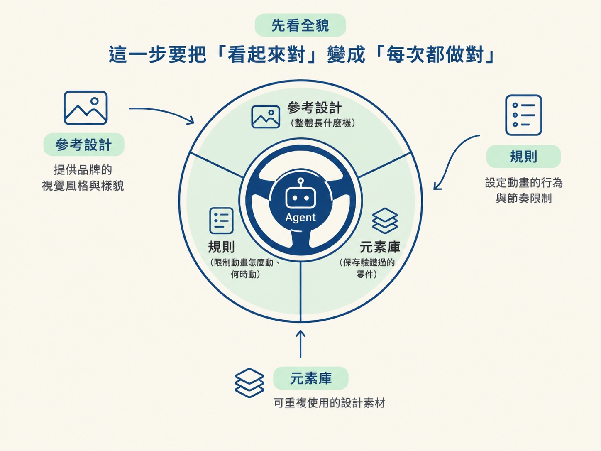
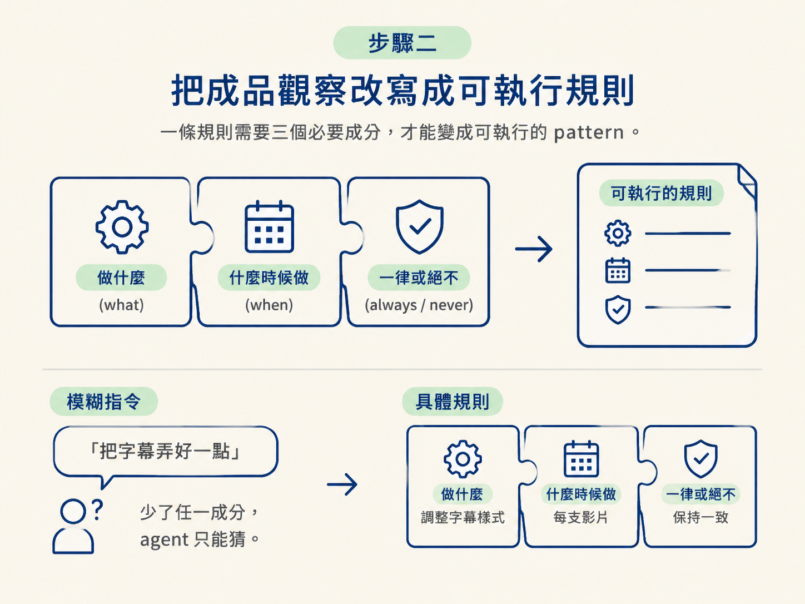
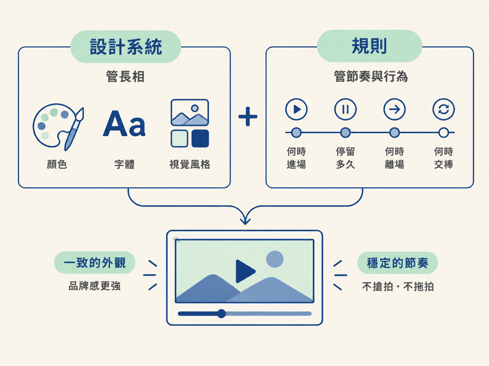

上一節，你已經把 DESIGN.md 存進專案，裡面定義了品牌的基本外觀。這一節要再往前一步：把你眼中的好作品，整理成 agent 可以反覆套用的參考設計、規則與元素庫。
整條流程可以想成替 agent 裝上三層方向盤：
做完這一步，你會得到一份短短的規則清單，以及一批可以重複使用的參考設計。下一支影片就不用從零開始調整，顏色、字體和節奏會更穩定地貼近品牌。

開始前，確認手上有以下素材：
DESIGN.md。評語不需要一開始就寫得很漂亮。重點是先指出你看見了什麼問題，例如「轉場太慢」、「字幕一次出現太多」或「數字有說到，畫面卻沒有呈現」。接著，再把這些觀察翻譯成 agent 能照做的規則。
DESIGN.md 可以決定配色與字體，但它通常無法單獨說清楚動畫的節奏：動作要多快、字幕一次出現幾個字、畫面要停留多久。只下達一次 prompt，成品往往只能做到大約八成。
因此，除了設計系統，也要放入幾張你喜歡的風格截圖，或直接提供一套參考設計，並告訴 agent：「match this」，照這個來。
具體畫面比抽象形容詞更容易溝通。當你看到某個畫面，心裡覺得「就是這個味道」，直接把截圖交給 agent，通常比寫十句「俐落、現代、有質感」更有效。agent 可以從參考中抓出顏色、字體與間距，快速靠近你要的整體風格。
看完第一版成品後，不要只寫「把字幕弄好一點」。這類描述把判斷工作留給 agent，它只能自行猜測你的意思。
一條可重複使用的 pattern（規則）至少要交代三件事：
下面是模糊寫法與可執行寫法的差別：
Weak: "make the subtitles better". Strong: "Subtitles show at most two words at a time, timed to the audio, current word in
orange. Apply this to every video from now on." A pattern has a what, a when, and an always or never.「把字幕弄好一點」沒有數量、時間或顏色限制，agent 只能猜。後面的寫法則清楚指定：一次最多顯示兩個字、要對齊音訊、目前唸到的字用橘色，而且從現在起每支影片都套用。
再看一條完整的規則：
Every transition is 0.4 seconds, sharp in and sharp out, with motion blur while it moves, then a
clean hold.這條規則把轉場長度、進出方式、移動時的效果，以及最後的停留狀態一次說清楚。它會變成之後每支影片都能沿用的 pattern，而不只是這支影片的臨時修正。

把外觀餵回 skill 時，以下三種方式要一起用，不是從中挑一個。
下面的對照表，可以當成你檢查規則是否夠具體的範本。左邊是觀看成品時的主觀感受，右邊則是 agent 能直接執行的指令。
| 你看到的問題 | 你餵回去的規則 |
|---|---|
| 轉場感覺很飄、很慢 | 每一次轉場都是 0.4 秒，進出俐落，移動時帶動態模糊，然後乾淨定住。 |
| 字幕一次顯示一整句 | 字幕一次最多顯示兩個字，對齊實際音訊，目前唸到的字用橘色。 |
| 數字用講的卻沒顯示 | 旁白講到的每個數字，都要在畫面上用橘色大字跳動呈現，約半秒後定住。大約的數字要保持誠實，寫「數千」，不要捏造一個總數。 |
| 畫面拖太久、視覺重複 | 一個場景的長度就照它那句腳本需要，絕不超過六秒。同一支影片裡不要重複使用同一個視覺。 |
| 3D 物件佔滿整個畫面 | 3D 物件最多在畫面上停留三秒，然後交棒給簡單的資訊圖。請觀眾留言的關鍵字一律加引號，例如 Comment "PLUGINS"。 |
寫完每一條後，可以用三個問題自我檢查：
如果答案是否定的，就補上數字、時間、條件或明確界線。規則越具體，agent 越不需要猜測。
當設計系統和規則都準備好，agent 做動畫時會把它們當成約束。可以把兩者想成分工合作：
例如製作字卡時，你可以要求它一張一張地進出：一次只讓一張卡片動起來，先進場，再停在旁白唸那句話的期間，接著離場，下一張才進來。字卡上的文字也要依照旁白逐字出現，而不是另外寫一套不同的文案。
這樣一來，設計系統負責讓影片有品牌感，規則則負責讓畫面不搶拍、不拖拍。兩者合在一起，影片才會同時有一致的外觀與穩定的節奏。

做完後，你手上應該有：
接著，把新素材交給 agent。它應該能自動沿用這些設定，讓成品的顏色、字體與節奏明顯更接近你的品牌，而不是每支影片都重新擲一次骰子。
只有一套 DESIGN.md 還不夠，一次 prompt 大約只到八成。剩下的靠三種餵法補齊：放進參考設計並說「match this」、把觀察寫成一句一句的規則、把喜歡的零件登記進元素庫。規則要寫成「做什麼、什麼時候、一律或絕不」，而不是這支影片的臨時修正。
到這裡，你已經能反覆把外觀調整到想要的方向。下一步，是把這套設計系統與規則放進 skill，讓它成為每支影片都會自動沿用的品牌資產。